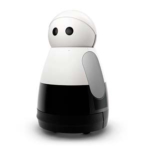
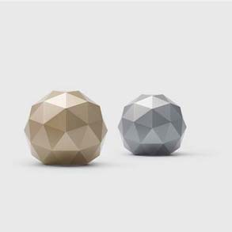
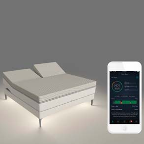
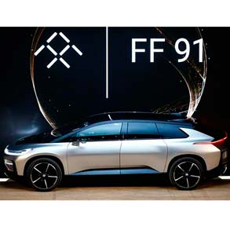
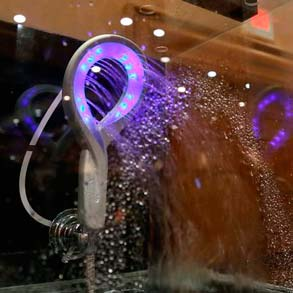

Los Gadgets 2017 más novedosos

Kuri
Un robot desarrollado por Californian Mayfield Robotics que cumplirá las labores de niñera y cuidador de mascotas, paseará por toda tu casa enviándote imágenes y videos en tiempo real manteniéndote al tanto de lo que hacen tus hijos, perros y gatos. Es un tierno robot con brazos pequeños y ojos capaces de reconocer a los integrantes de tu familia. Además tiene 2 parlantes incorporados en los que reproducirá tu música favorita, y no solo eso, también cuenta con sensores faciales que responderán a tus preguntas y movimientos con la cabeza. Lo podrás encontrar por un precio de 600 dólares.
Lenovo Legion Y720
La multinacional tecnológica china saca al mercado Gaming, su más potente portátil, con una pantalla de 15.6” de ultra definición, potenciado con un procesador Intel core de séptima generación y una modesta tarjeta gráfica GTX 1060 para una inmersión total de juego, lo que la hace única en el mercado es su exclusivo sonido direccional Dolby Atmos y un receptor inalámbrico para Xbox One.
Norton Core
La famosa casa de seguridad digital Norton lanza al mercado el router más seguro del planeta, asegura parar a esos chicos malos que intentan apoderarse de tu wifi protegiéndote de virus, hardware malicioso, hackers y muchos más. Hermoso y simple es la manera correcta de describir este fashionista router.
The Sleep Number 360
En la búsqueda del confort y una mejor calidad de vida llegan las camas inteligentes, con las reconfortantes opciones de calentar tus pies para “caer como una piedra”, la Sleep Number 360 puede pre – calentar cada lado de la cama para tener un reconfortante sueño. Lo mejor de este novedoso invento es que tiene un sensor de ronquido que al ser detectado levanta delicadamente tu lado de la cama para evitar despertar a tu pareja y acabar con ese molesto sonido.

BACktrack Skyn
¡Es el primer monitor de alcohol en el mundo!, se reinventa la manera en la que la gente consumirá alcohol con solo colocarlo en su muñeca este aparato le dirá el nivel de alcohol en tiempo real. Cada día mueren más de 90 personas por accidentes automovilísticos relacionados al alcohol siendo no solo un problema regional sino global, este dispositivo busca disminuir considerablemente estos índices letales notificándote cuando tengas altos niveles de alcohol en tu cuerpo.

Faraday Future FF91
¿Un automóvil más allá del futuro?, este auto fue mostrado en Las Vegas y apuesta a ser el competidor directo de Tesla (Otra marca de tecnología en autos eléctricos) que a pesar de algunos contratiempos, como la salida de varios directivos en la mitad del año pasado, apostó por llevar a la gran feria de tecnología sus dos prototipos aun no finalizados, pero que cuentan con 10 cámaras, 13 sensores y 378 millas de autonomía.

Hydrao
La destacada empresa francesa y única en trabajar arduamente por cambiar la experiencia en la ducha trae al mercado un dispositivo que cambiará de colores verde – azul – morado – rojo dependiendo de cuanto dures bañándote con el objetivo de acortar el tiempo desperdiciado y del malgasto del agua obviamente, además cuenta con una aplicación para smartphones en la que podrás controlar la temperatura deseada en cada “regaderazo”.